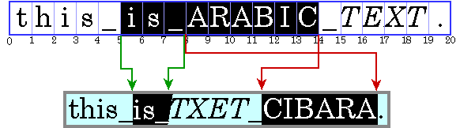
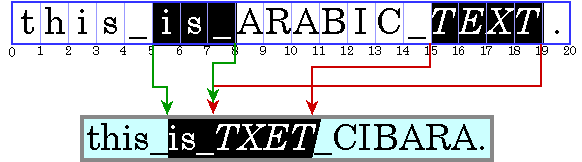

Lección: Trabajando con la IPA de Texto
Sección: Advanced Text Display
Trabajando con Texto Bidireccional
En esta sección se explica cómo trabajar con texto bidireccional con clases en los paquetes
java.awt y
java.awt.font. Estas clases le permiten dibujar texto con estilo en cualquier idioma o
escritura compatible con el Estándar Unicode: un sistema de codificación de caracteres global para manejar
diversos lenguajes modernos, clásicos e históricos. Al dibujar texto, se debe tener en cuenta la dirección
en la que se lee el texto para que todas las palabras de la cadena se muestren correctamente. Estas clases
mantienen la dirección del texto y lo dibujan correctamente sin importar si la cadena va de izquierda a
derecha, de derecha a izquierda o ambas (bidireccional). El texto bidireccional presenta problemas
interesantes para colocar correctamente los signos de intercalación, ubicar con precisión las selecciones y
mostrar correctamente varias líneas. Además, el texto bidireccional y de derecha a izquierda presenta
problemas similares para mover el cursor en la dirección correcta en respuesta a las pulsaciones de las
teclas de flecha derecha e izquierda.
Los siguientes temas están cubiertos:
- Ordenar Texto
- Manipulación de Texto Bidireccional
- Realización de Diseño de Texto en una Aplicación Java
- Administrar el Diseño de Texto con la Clase TextLayout
Si planea trabajar con componentes Swing, consulte Trabajando con Texto Bidireccional con la Clase JTextComponent y Usando Componentes de Texto para más información.
Ordenar Texto
Java SE almacena texto en la memoria en orden lógico, que es el orden en el que se leen y escriben los caracteres y las palabras. El orden lógico no es necesariamente el mismo que el orden visual, que es el orden en el que se muestran los glifos correspondientes.
El orden visual de un sistema de escritura debe mantenerse en texto bidireccional incluso cuando los idiomas están mezclados. Esto se ilustra en la siguiente figura, que muestra una frase árabe incrustada en una oración en inglés.
Nota: En este ejemplo y en los siguientes, el texto en árabe y hebreo se representa con letras mayúsculas y los espacios con guiones bajos. Cada ilustración contiene dos partes: una representación de los caracteres almacenados en la memoria (los caracteres en orden lógico) seguida de una representación de cómo se muestran esos caracteres (los caracteres en orden visual). Los números debajo de los cuadros de caracteres indican los desplazamientos de inserción.
Aunque son parte de una oración en inglés, las palabras en árabe se muestran en el orden de escritura árabe, de derecha a izquierda. Debido a que la palabra árabe en cursiva está lógicamente después del árabe en texto sin formato, está visualmente a la izquierda del texto sin formato.
Cuando se muestra una línea con una mezcla de texto de izquierda a derecha y de derecha a izquierda, la dirección de la base es significativa. La dirección base es el orden del guión del sistema de escritura predominante. Por ejemplo, si el texto es principalmente en inglés con algo de árabe incrustado, la dirección base es de izquierda a derecha. Si el texto es principalmente árabe con algo de inglés o números incrustados, entonces la dirección base es de derecha a izquierda.
La dirección base determina el orden en el que se muestran los segmentos de texto con una dirección común. En el ejemplo que se muestra en la figura anterior, la dirección de la base es de izquierda a derecha. Hay tres ejecuciones direccionales en este ejemplo: el texto en inglés al principio de la oración va de izquierda a derecha, el texto en árabe va de derecha a izquierda y el punto va de izquierda a derecha.
Los gráficos suelen estar integrados en el flujo de texto. Estos gráficos en línea se comportan como glifos en términos de cómo afectan el flujo de texto y el ajuste de línea. Estos gráficos en línea deben colocarse utilizando el mismo algoritmo de diseño bidireccional para que aparezcan en la ubicación adecuada en el flujo de caracteres.
Java SE usa el Algoritmo Bidireccional de Unicode, que es un algoritmo que se usa para ordenar glifos dentro de una línea, determinando así la direccionalidad de los textos bidireccionales. En la mayoría de los casos, no es necesario incluir información adicional para que este algoritmo obtenga el orden de visualización correcto.
Manipulación de Texto Bidireccional
Para permitir que el usuario edite texto bidireccional, debe poder hacer lo siguiente:
- Visualización de Signos de Intercalación
- Moviendo Signos de Intercalación
- Prueba de Colisiones
- Destacando Selecciones
Visualización de Signos de Intercalación
En el texto editable, se utiliza un signo de intercalación para representar gráficamente el punto de inserción actual, la posición en el texto donde se insertarán los nuevos caracteres. Normalmente, un símbolo de intercalación se muestra como una barra vertical intermitente entre dos glifos. Los nuevos caracteres se insertan y se muestran en la ubicación del símbolo de intercalación.
Calcular la posición del símbolo de intercalación puede resultar complicado, especialmente para el texto bidireccional. Los desplazamientos de inserción en los límites direccionales tienen dos posibles posiciones de intercalación porque los dos glifos que corresponden al desplazamiento del carácter no se muestran uno junto al otro. Esto se ilustra en la siguiente figura. En esta figura, los signos de intercalación se muestran como corchetes para indicar el glifo al que corresponde el símbolo de intercalación.

El desplazamiento de 8 caracteres corresponde a la ubicación después del guión bajo y antes de la A. Si el usuario ingresa un carácter árabe, su glifo se muestra a la derecha (antes) de la A; si el usuario ingresa un carácter en inglés, su glifo se muestra a la derecha (después) del guión bajo.
Para manejar esta situación, algunos sistemas muestran signos de intercalación dobles, un intercalado fuerte
(primario) y un intercalado débil (secundario). El signo de intercalación fuerte indica dónde se mostrará un
carácter insertado cuando la dirección de ese carácter sea la misma que la dirección base del texto. El signo de
intercalación débil muestra dónde se mostrará un carácter insertado cuando la dirección del carácter sea
opuesta a la dirección base.
TextLayout
admite automáticamente signos de intercalación dobles.
Cuando trabaja con texto bidireccional, no puede simplemente agregar los anchos de los glifos antes de un desplazamiento de carácter para calcular la posición del signo de intercalación. Si lo hiciera, el símbolo de intercalación se dibujaría en el lugar incorrecto, como se muestra en la siguiente figura:
Para que el signo de intercalación esté correctamente posicionado, es necesario agregar los anchos de los glifos a la izquierda del desplazamiento y tener en cuenta el contexto actual. A menos que se tenga en cuenta el contexto, las métricas de glifos no coincidirán necesariamente con la visualización. (El contexto puede afectar qué glifos se utilizan).
Moviendo Signos de Intercalación
Todos los editores de texto permiten al usuario mover el cursor con las teclas de flecha. Los usuarios esperan que el cursor se mueva en la dirección de la tecla de flecha presionada. En texto de izquierda a derecha, mover el desplazamiento de inserción es simple: la tecla de flecha derecha aumenta el desplazamiento de inserción en uno y la tecla de flecha izquierda lo reduce en uno. En texto bidireccional o en texto con ligaduras, este comportamiento haría que el símbolo de intercalación saltara a través de glifos en los límites de dirección y se moviera en la dirección inversa dentro de diferentes recorridos direccionales.
Para mover el símbolo de intercalación sin problemas a través del texto bidireccional, debe tener en cuenta la dirección de la ejecución del texto. No puede simplemente incrementar el desplazamiento de inserción cuando se presiona la tecla de flecha derecha y disminuirlo cuando se presiona la tecla de flecha izquierda. Si el desplazamiento de inserción actual está dentro de una serie de caracteres de derecha a izquierda, la tecla de flecha derecha debería disminuir el desplazamiento de inserción y la tecla de flecha izquierda debería aumentarlo.
Mover el símbolo de intercalación a través de un límite direccional es aún más complicado. La siguiente figura ilustra lo que sucede cuando se cruza un límite direccional cuando el usuario está navegando con la tecla de flecha. Pasar tres posiciones a la derecha en el texto mostrado corresponde a moverse a las compensaciones de caracteres 7, 19, luego 18.
Ciertos glifos nunca deben tener un signo de intercalación entre ellos; en cambio, el símbolo de intercalación debería moverse como si los glifos representaran un solo carácter. Por ejemplo, nunca debe haber un signo de intercalación entre una o y una diéresis si están representadas por dos caracteres separados.
La clae
TextLayout
proporciona métodos (
getNextRightHit y
getNextLeftHit) que le permiten mover fácilmente el símbolo de intercalación sin problemas
a través del texto bidireccional.
Prueba de Colisiones
A menudo, una ubicación en el espacio del dispositivo debe convertirse en un desplazamiento de texto. Por ejemplo, cuando un usuario hace clic con el mouse en un texto seleccionable, la ubicación del mouse se convierte en un desplazamiento de texto y se usa como un extremo del rango de selección. Lógicamente, esto es lo contrario de colocar un signo de intercalación.
Cuando trabaja con texto bidireccional, una única ubicación visual en la pantalla puede corresponder a dos desplazamientos diferentes en el texto de origen, como se muestra en la siguiente figura:
Debido a que una sola ubicación visual puede corresponder a dos desplazamientos diferentes, probar el texto bidireccional no es solo una cuestión de medir el ancho de los glifos hasta que se encuentra el glifo en la ubicación correcta y luego asignar esa posición a un desplazamiento de carácter. Detectar el lado del impacto ayuda a distinguir entre las dos alternativas.
Puede realizar la comprobación de colisiones usando
TextLayout.hitTestChar. La información de colisión se encapsula en un objeto
TextHitInfo e incluye información sobre el lado en el que fue la colisión.
Destacando Selecciones
Un rango seleccionado de caracteres se representa gráficamente mediante una región resaltada, un área en la que los glifos se muestran con video inverso o contra un color de fondo diferente.
Las regiones resaltadas, como los signos de intercalación, son más complicadas para el texto bidireccional que para el texto unidireccional. En el texto bidireccional, es posible que un rango contiguo de caracteres no tenga una región resaltada contigua cuando se muestre. Por el contrario, una región resaltada que muestre un rango de glifos visualmente contiguo podría no corresponder a un solo rango contiguo de caracteres.
Esto da como resultado dos estrategias para resaltar selecciones en texto bidireccional:
-
Resaltado lógico: Con el resaltado lógico, los caracteres seleccionados son siempre contiguos en el modelo de texto, y la región resaltada puede ser no contigua. El siguiente es un ejemplo de resaltado lógico:

-
Resaltado visual: con el resaltado visual, puede haber más de un rango de caracteres seleccionados, pero la región resaltada siempre es contigua. El siguiente es un ejemplo de resaltado visual:

El resaltado lógico es más sencillo de implementar, ya que los caracteres seleccionados siempre son contiguos en el texto.
El ejemplo
SelectionSample.java
demuestra el resaltado lógico:
Realización de Diseño de Texto en una Aplicación Java
Dependiendo de la IPA de Java que utilice, puede tener tanto control sobre el diseño del texto como necesite:
-
Si solo desea mostrar un bloque de texto o necesita un control de texto editable, puede usar
JTextComponent, que realizará el diseño del texto por usted.JTextComponentestá diseñado para satisfacer las necesidades de la mayoría de las aplicaciones internacionales y admite texto bidireccional Para obtener más información sobreJTextComponent, vea Trabajando con Texto Bidireccional con la Clase JTextComponent y Usando Componentes de Texto para más información. -
Si desea mostrar una cadena de texto simple, puede llamar al método
Graphics2D.drawStringy deje que Java 2D diseñe la cadena por usted. También puede usarGraphics2D.drawStringpara representar cadenas con estilo y cadenas que contienen texto bidireccional. Para obtener más información sobre cómo renderizar texto a través deGraphics2D, vea Trabajando con la IPA de Texto. -
Si desea implementar sus propias rutinas de edición de texto, puede utilizar
TextLayoutpara administrar el diseño del texto, el resaltado y la detección de visitas. Las facilidades proporcionadas porTextLayoutmaneja los casos más comunes, incluidas las cadenas de texto con fuentes mixtas, idiomas mezclados y texto bidireccional. Para obtener más información sobre el uso de TextLayout, consulte Administrar el diseño del texto. -
Si desea un control total sobre cómo se forma y posiciona el texto, puede construir sus propias instancias de
GlyphVectorusando la claseFontY luego presentarlas a través de la claseGraphics2D.
Por lo general, no es necesario que realice usted mismo las operaciones de diseño de texto. Para la mayoría de
las aplicaciones,
JTextComponent es la mejor solución para mostrar texto estático y editable. Sin embargo,
JTextComponent no admite la visualización de signos de intercalación dobles o selecciones
no contiguas en texto bidireccional. Si su aplicación requiere estas características, o si prefiere
implementar sus propias rutinas de edición de texto, puede usar el IPA de diseño de texto Java 2D.
Administrar el Diseño de Texto con la Clase TextLayout
La clase
TextLayout admite texto que contiene varios estilos y caracteres de diferentes sistemas de
escritura, incluidos el árabe y el hebreo. (El árabe y el hebreo son particularmente difíciles de mostrar
porque debe remodelar y reordenar el texto para lograr una representación aceptable).
TextLayout simplifica el proceso de visualización y medición de texto incluso si está
trabajando con texto solo en inglés. Mediante el uso de
TextLayout,
puede lograr una tipografía de alta calidad sin esfuerzo adicional.
TextLayout
está diseñada para que no haya un impacto significativo en el rendimiento cuando se utiliza para mostrar texto
simple y unidireccional. Hay una sobrecarga de procesamiento adicional cuando
TextLayout
se utiliza para mostrar texto en árabe o hebreo. Sin embargo, normalmente es del orden de microsegundos por
carácter y está dominado por la ejecución del código de dibujo normal.
La clase
TextLayout
gestiona el posicionamiento y el orden de los glifos por usted. Puedes usar
TextLayout
para hacer lo siguiente:
- Diseñar Texto con la Clase TextLayout
- Visualización de Cuidadores Duales con la Clase TextLayout
- Mover el Signo de Intercalación con la Clase TextLayout
- Comprobación de Colisiones con la Clase TextLayout
- Resaltado de Selecciones con la Clase TextLayout
Diseñar Texto con la Clase TextLayout
TextLayout
presenta automáticamente el texto, incluido el texto bidireccional, con la forma y el orden correctos. Para dar
forma y ordenar correctamente los glifos que representan una línea de texto,
TextLayout
debe conocer el contexto completo del texto:
-
Si el texto cabe en una sola línea, como una etiqueta de una sola palabra para un botón o una línea en un
cuadro de diálogo, puede construir un
TextLayoutdirectamente del texto. -
Si tiene más texto del que puede caber en una sola línea o desea dividir el texto de una sola línea en
segmentos con pestañas, no puede construir un
TextLayoutdirectamente. Debe usar unLineBreakMeasurerpara proporcionar suficiente contexto. Ver Dibujando Múltiples Líneas de Texto para más información.
La dirección base del texto normalmente se establece mediante un atributo (estilo) en el texto. Si falta ese
atributo,
TextLayout
sigue el algoritmo bidireccional Unicode y deriva la dirección base de los caracteres iniciales en el párrafo.
Visualización de Cuidadores Duales con la Clase TextLayout
TextLayout
mantiene información de intercalación como la intercalación
Shape, posición y
ángulo. Puede utilizar esta información para mostrar fácilmente a los cuidadores en texto unidireccional y
bidireccional. Cuando dibuja cuidadores para texto bidireccional, utilizar
TextLayout
asegura que los signos de intercalación se colocarán correctamente.
TextLayout
proporciona Shapes de intercalación predeterminada y admite automáticamente intercalaciones dobles.
Para glifos en cursiva y oblicuos,
TextLayout
produce signos de intercalación en ángulo, como se muestra en la siguiente figura. Estas posiciones de
intercalación también se utilizan como límites entre los glifos para resaltar y realizar pruebas, lo que ayuda
a producir una experiencia de usuario coherente.

Dado un desplazamiento de inserción, el método
getCaretShapes devuelve una mariz de dos elementos de objetos
Shape: el elemento 0
contiene el signo de intercalación fuerte y el elemento 1 contiene el signo de intercalación débil, si
existe. Para mostrar signos de intercalación dobles, simplemente dibuje ambos objetos
Shape; los signos de
intercalación se representarán automáticamente en las posiciones correctas.
Si desea utilizar signos de intercalación personalizados, puede recuperar la posición y el ángulo de los
TextLayout
y dibujarlos usted mismo.
El ejemplo
HitTestSample.java demuestra los signos de intercalación dobles.
Un clic en la o al lado de la o hacia los registros de texto hebreo en los que el usuario final hizo clic después de la o, que es parte de el texto en inglés. Esto coloca el signo de intercalación débil (negro) junto a la o y el signo de intercalación fuerte (rojo) frente a la H:
Un clic en el espacio a la derecha de o registra que el usuario final hizo clic en el espacio, que es parte del texto hebreo. Esto coloca el signo de intercalación fuerte (rojo) junto a la o y el signo de intercalación débil (negro) frente a la H:
Mover el Signo de Intercalación con la Clase TextLayout
También puede utilizar la clase
TextLayout
para determinar el desplazamiento de inserción resultante cuando un usuario presiona la tecla de flecha
izquierda o derecha. Dado un objeto TextHitInfo que representa el desplazamiento de inserción
actual, el método
getNextRightHit devuelve un objeto
TextHitInfo que representa el desplazamiento de inserción correcto si se presiona la tecla
de flecha derecha. El método
getNextLeftHit proporciona la misma información para la tecla de flecha izquierda.
El siguiente extracto de la muestra
ArrowKeySample.java demuestra cómo determinar el desplazamiento de inserción resultante
cuando un usuario presiona la tecla de flecha izquierda o derecha:
public class ArrowKeySample extends JPanel implements KeyListener {
// ...
private static void createAndShowGUI() {
// Crea y configura la ventana.
ArrowKey demo = new ArrowKey();
frame = new JFrame("Arrow Key Sample");
frame.addKeyListener(demo);
// ...
}
private void handleArrowKey(boolean rightArrow) {
TextHitInfo newPosition;
if (rightArrow) {
newPosition = textLayout.getNextRightHit(insertionIndex);
} else {
newPosition = textLayout.getNextLeftHit(insertionIndex);
}
// getNextRightHit() / getNextLeftHit() devolverá nulo si
// no hay una posición de intercalación a la derecha (izquierda) del
// posición actual.
if (newPosition != null) {
// Actualiza insertionIndex.
insertionIndex = newPosition.getInsertionIndex();
// Vuelva a pintar el componente para que se muestren los nuevos signos de intercalación.
frame.repaint();
}
}
// ...
@Override
public void keyPressed(KeyEvent e) {
int keyCode = e.getKeyCode();
if (keyCode == KeyEvent.VK_LEFT || keyCode == KeyEvent.VK_RIGHT) {
handleArrowKey(keyCode == KeyEvent.VK_RIGHT);
}
}
}
Comprobación de Colisiones con la Clase TextLayout
La clase
TextLayout proporciona un mecanismo simple para probar el texto. El método
hitTextChar toma las coordenadas x e y del ratón como argumentos y
devuelve un objeto
TextHitInfo. El objeto
TextHitInfo contiene el desplazamiento de inserción para la posición especificada y el lado
en el que estaba el hit. El desplazamiento de inserción es el desplazamiento más cercano al acierto: si el
acierto sobrepasa el final de la línea, se devuelve el desplazamiento al final de la línea.
El siguiente extracto de
HitTestSample.java recupera el desplazamiento de un clic del ratón:
private class HitTestMouseListener extends MouseAdapter {
public void mouseClicked(MouseEvent e) {
Point2D origin = computeLayoutOrigin();
// Calcula la ubicación del clic del ratón relativa a
// origen de textLayout.
float clickX = (float) (e.getX() - origin.getX());
float clickY = (float) (e.getY() - origin.getY());
// Obtiene la posición del carácter del clic del mouse.
TextHitInfo currentHit = textLayout.hitTestChar(clickX, clickY);
insertionIndex = currentHit.getInsertionIndex();
// Vuelva a pintar el componente para que se muestren los nuevos signos de intercalación.
repaint();
}
}
Resaltado de Selecciones con la Clase TextLayout
Puede obtener un
Shape que representa la
región destacada del
TextLayout.
TextLayout
toma en cuenta automáticamente el contexto al calcular las dimensiones de la región resaltada.
TextLayout
admite el resaltado tanto lógico como visual.
El siguiente extracto de
SelectionSample.java muestra una forma de mostrar texto resaltado:
public void paint(Graphics g) {
// ...
boolean haveCaret = anchorEnd == activeEnd;
if (!haveCaret) {
// Recupera la región resaltada para el rango de selección.
Shape highlight =
textLayout.getLogicalHighlightShape(anchorEnd, activeEnd);
// Llena la región resaltada con el color resaltado.
graphics2D.setColor(HIGHLIGHT_COLOR);
graphics2D.fill(highlight);
}
// ...
}
// ...
private class SelectionMouseMotionListener extends MouseMotionAdapter {
public void mouseDragged(MouseEvent e) {
Point2D origin = computeLayoutOrigin();
// Calcula la ubicación del mouse en relación con
// origen de textLayout.
float clickX = (float) (e.getX() - origin.getX());
float clickY = (float) (e.getY() - origin.getY());
// Obtiene la posición del carácter de la ubicación del mouse.
TextHitInfo position = textLayout.hitTestChar(clickX, clickY);
int newActiveEnd = position.getInsertionIndex();
// Si newActiveEnd es diferente de activeEnd, actualiza activeEnd
// y vuelve a pintar el panel para que se muestre la nueva selección.
if (activeEnd != newActiveEnd) {
activeEnd = newActiveEnd;
frame.repaint();
}
}
}
private class SelectionMouseListener extends MouseAdapter {
public void mousePressed(MouseEvent e) {
Point2D origin = computeLayoutOrigin();
// Calcule la ubicación del mouse en relación con
// el origen de TextLayout.
float clickX = (float) (e.getX() - origin.getX());
float clickY = (float) (e.getY() - origin.getY());
// Establece el ancla y los extremos activos de la selección
// a la posición del carácter de la ubicación del mouse.
TextHitInfo position = textLayout.hitTestChar(clickX, clickY);
anchorEnd = position.getInsertionIndex();
activeEnd = anchorEnd;
// Vuelve a pintar el panel para que se muestre la nueva selección.
frame.repaint();
}
}
El método SelectionMouseListener.mousePressed especifica la variable anchorEnd, que es
la posición en el texto donde se hizo clic con el mouse. El método
SelectionMouseMotionListener.mouseDragged especifica la variable activeEnd, que es la
posición en el texto a donde se arrastró el mouse. El método paint recupera un objeto
Shape que representa el
texto seleccionado (el texto entre las posiciones anchorEnd y activeEnd). El
método paint luego llena el objeto
Shape con el color de
resaltado.